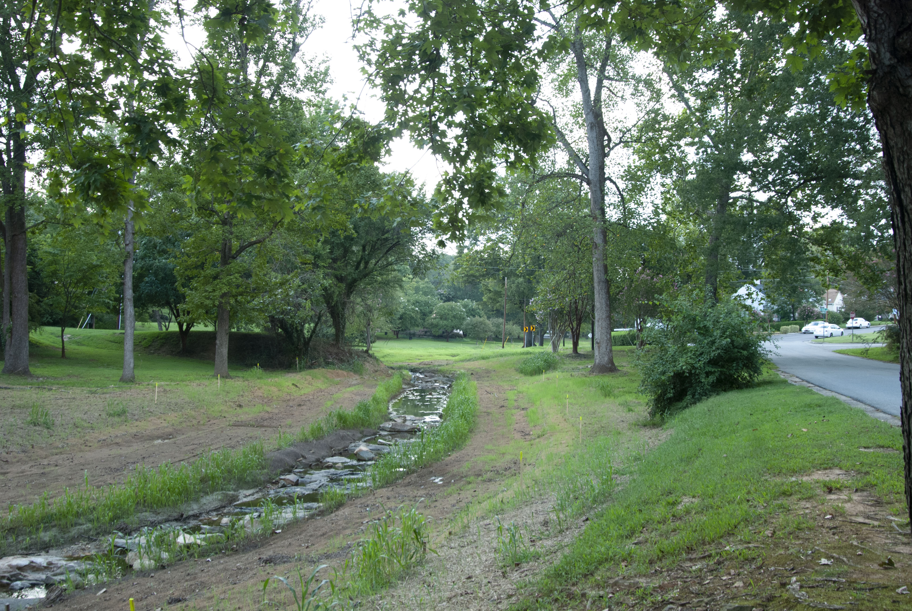
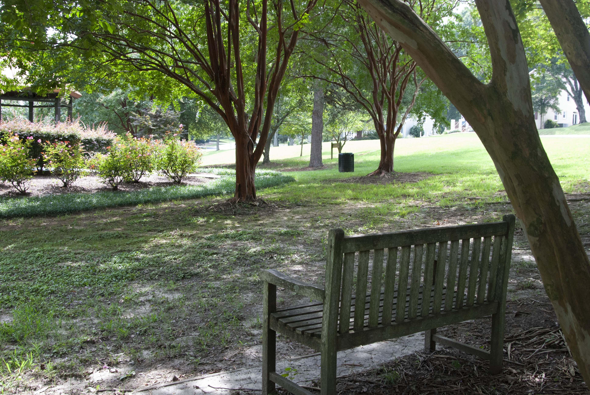
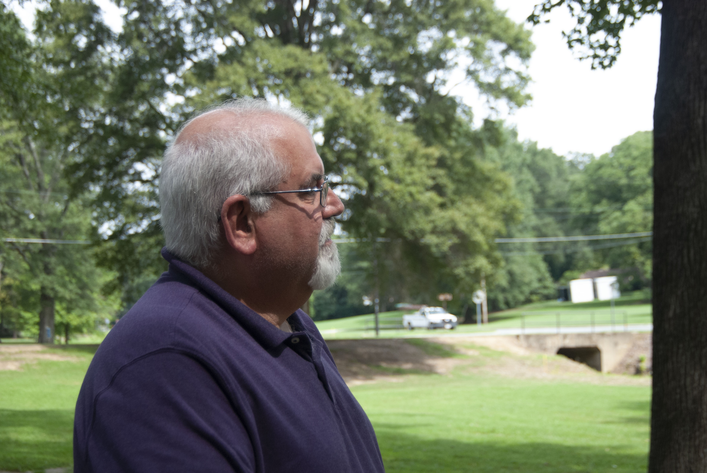
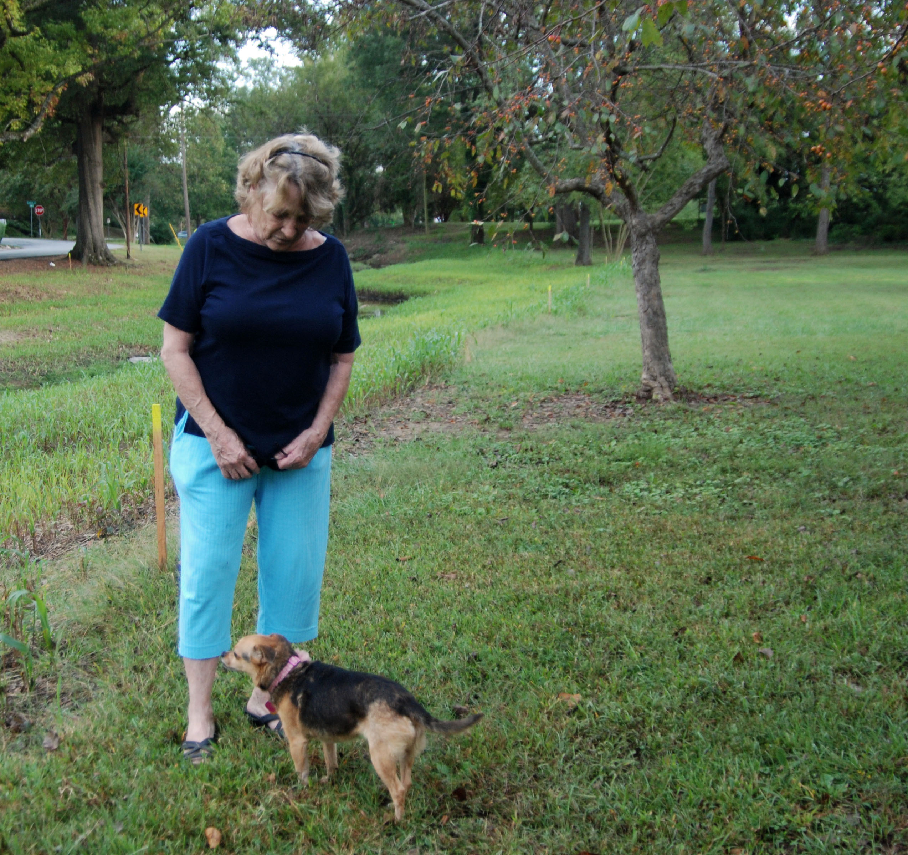
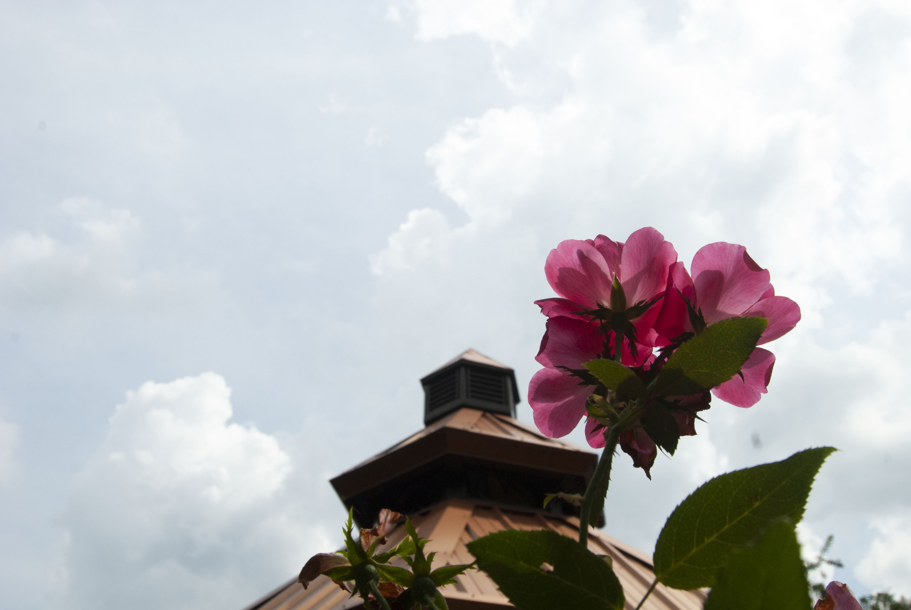
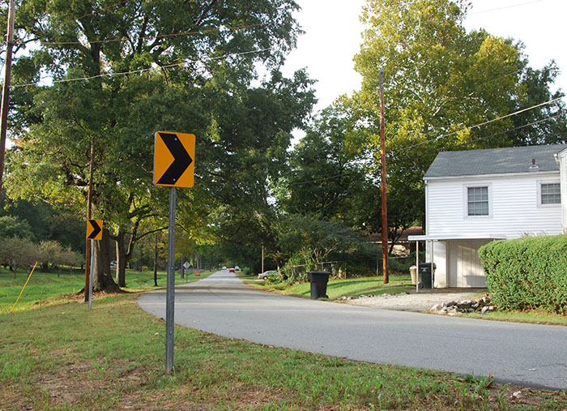

Willowbrook Park anticipates transformation with new arboretum
The city of Burlington and the New Leaf Society have collaborated to create an outdoor space that increases health, education and unity in Alamance County.
By Lilly Blomquist
Oct. 18, 2018

When Rett Davis was growing up, he spent his free time building model battleships out of scraps of lumber and watching his inventions drift down the neighborhood creek. For Davis, the natural world was an exciting place full of resources that satisfied his desire to explore and create.
Now, as the president of the New Leaf Society, Davis strives to revitalize outdoor play and spark children’s curiosity for their environment. Davis said he imagines a future in which children set aside their smartphones and step foot into a world that engages their senses, stimulates their brain and keeps them moving.
In order to fulfill his dream, Davis decided to convert Willowbrook Park, an underutilized flood plain in Burlington that extends from Front Street to South Church Street, into a vibrant arboretum. He said his goal for the project is to increase citizens’ activity levels, provide them with educational opportunities and strengthen their sense of community.
“My vision for this park is to get children back outdoors, to get children to interact with nature, to play in the creek like I did when I was a young boy, to look at fish, to see tadpoles, to get their feet wet,” Davis said.
Davis and the New Leaf Society, a nonprofit and private organization that strives to enhance the quality of life and economic prosperity in Alamance County, have partnered with the city of Burlington to work on this three-year, $2.3 million project. They said they will turn the park’s 11 acres of linear green space into a more accessible, attractive and populated area.
New Leaf Society President Rett Davis says he is turing Willowbrook Park into an arboretum to be an advocate of nature.
This fall, the New Leaf Society will begin working on the arboretum, its largest project. The New Leaf Society’s committee of eight members along with 15 city officials and other engineers, contractors, architects and designers will start implementing their proposed changes to turn a wasted green space into a community asset.
Expecting new changes
The arboretum will have new amenities that improve the park’s appearance and provide a setting for people to learn about and interact with nature.
On the corner of Fountain Place and South Church Street, a 2,200-square-foot, one-story building will provide an entryway into the park. The building will have an event room for children’s birthday parties and other small events, a covered seating area and restrooms. Davis said the building’s features are practical resources that will make park visits more worthwhile.
Located next to the building, a children’s interactive play structure will replace the traditional plastic playground. The play area will include a tree house, mazes, water features and climbing rocks to advance children’s exploration in nature.
“We’re making use of the natural materials for kids to play, like if they were going out in the woods,” said Burlington Recreation and Parks Director Tony Laws. “It’s a different experience for them. We’re getting them used to playing outside in nature.”
Tom Flood, Elon University’s director of Physical Plant and one of the landscape architects for the arboretum project, primarily focused on designing and developing the children’s play feature. Flood said he wanted children to become more invested in nature through a hands-on and experiential learning opportunity, so he chose natural materials for his design.
“One of the things we wanted to do was have a particular place for children to encourage their connection with the outdoors but also to promote physical activity and engage them in the place,” Flood said.
Certain areas of the park's stream, Brown Branch, will be open for children to access. The city of Burlington wanted to increase the safety of the creek, so city officials decided to restore and stabilize the stream banks. The creek had been experiencing flooding and erosion problems until Carolina Environmental Contracting Inc. worked on widening the stream banks from the first week of May until the second week of September.
Burlington Water Resources Director Bob Patterson said the stream bank project will supplement the arboretum’s goal of inspiring people to interact with nature.
“It’s a great tool for education that we can use to teach people about the environment, about storm water and about different vegetation,” Patterson said.
Children and other individuals will also be able to walk across the creek on three new bridges that contractors will assemble.
Throughout the park, contractors will plant 150 new trees and 75 shrubs to replace the ones that Carolina Environmental Contracting Inc. removed during the stream project. The new willows, red oaks, white oaks, dogwoods, magnolias, roses and hydrangeas will offer a peaceful setting and an opportunity to learn about native plants, according to Davis. He said the arboretum will have maps and name tags that identify the vegetation, guided tours and educational classes to help people recognize plants and understand how they grow and function.
“An arboretum should introduce new plants to people,” Davis said. “That’s how they learn about new plants, so we’re excited about that opportunity.”
Not only will the arboretum have floral gardens, but it will also have certain areas dedicated to sculpture gardens and a place to honor those who served in the military with a veterans’ memorial plaza.
Park visitors will be able to access each aspect of the arboretum on a 1-mile concrete trail that extends from one side of the park to the other and also encircles the park.
“It’s going to be a stroll through a nice and shaded passive park with people enjoying what’s available,” Laws said. “It’ll be a place where people can come and enjoy and escape from all the problems of society.”
Davis said he anticipates that the arboretum will be a destination for those from surrounding cities to visit. He said he wanted to accommodate travelers by creating an off-street parking area.
Burlington Recreation and Parks Director Tony Laws says Willowbrook Park's water feature provides an ideal setting for an arboretum's collection of plants.
Planning the project
Before the project planners worked together to envision and design these amenities, Davis identified Willowbrook Park as a prospective project. Davis said he constantly scopes out local parks to find areas in need of physical improvements and beautification. When Davis landed upon Willowbrook Park in 2014, he saw the park as a potential site for an arboretum due to its narrow and long structure. Willowbrook Park is one-half miles long and 150 feet wide, so Davis said the layout allows for a walking trail to link each amenity in the arboretum together.
Tony Laws, Burlington director of Recreation and Parks, says the arboretum will provide a peaceful place for community members to appreciate nature.
Laws said arboretums are passive parks that promote understanding and admiration for nature. He said Burlington's five large parks and 10 smaller parks are primarily active parks, which have tennis courts, fields, swimming pools or playgrounds for visitors to play recreational sports.
“This is more of a passive park,” Laws said. “People will certainly come here and walk, so they will be active but not like they’re playing a game of baseball or softball. They will be walking and enjoying what they see and taking a leisurely stroll. It will be quite a bit of difference from our other parks.”
Flood said transforming Willowbrook Park into an arboretum satisfies the community’s need for a different outdoor experience, one that focuses on education and beauty in addition to exercise.
“The general Burlington community needs these kinds of things. Burlington has some parks, but they don’t have anything like this, so this is a major contribution to the community that enhances the quality of life and livability of our community.”
— Tom Flood, landscape architect and Elon University's director of Physical Plant
John Bell, a resident of West Willowbrook Drive, says he is excited to watch his neighborhood improve and expand.
In addition to satisfying the Burlington community’s needs, the arboretum will also benefit the surrounding neighborhoods, according to John Bell, a resident of West Willowbrook Drive. He said Willowbrook Park has typically been an underdeveloped green space in need of an improvement.
“We’re excited to get more people over here to utilize it because a lot of times it seems like it’s underutilized and just used by folks around the neighborhood,” Bell said. “I really think it’s going to become more of a destination once they get the whole thing done.”
Dottie Wilburn, resident of Parkview Drive, regularly walks her dog in Willowbrook Park.
Dottie Wilburn, resident of Parkview Drive, said she was initially hesitant to accept the arboretum project. She has been visiting the park for the past nine years, so she said her neighborhood park's familiarity has been comforting. After Carolina Environmental Contracting Inc. removed the park’s invasive vegetation that she said obstructed her view of the creek and the surrounding homes, Wilburn said she is excited about the park’s aesthetic potential.
“At first I was a little bit depressed because we’re used to all of these trees, but I really like it now, and they’re going to do so much more,” Wilburn said.
Landscapers will start planting a collection of vegetation this summer to offer citizens a more attractive park.
After Davis and the New Leaf Society identified the project, they created a vision for the arboretum and outlined its features, purpose and benefit. For inspiration and design ideas, the project planners visited arboretums in Greensboro, Asheville and Raleigh. They decided the arboretum would be a collection of plants and natural features that is dedicated to landscaping and learning opportunities.
One year later, the New Leaf Society communicated that vision to the city of Burlington, and the city approved.
“We had to sell the vision first,” Davis said. “They realized this would be good for the city of Burlington. We don’t have anything like this. They gave us a green light to proceed.”
Once the New Leaf Society committed to the project and secured the city’s permission, Flood worked with other architects and engineers to design the arboretum.
He analyzed the Willowbrook Park location for its usability and practicality and scoped out potential areas for the project elements. He drew designs for each amenity and shared his design ideas with the Burlington City Council and the public for their approval.
The project managers met with community members to hear their feedback so that they could adjust the arboretum concept and designs to satisfy their needs and minimize any potentially negative impact.
At the public meetings, individuals voiced their concerns that the modern design of the arboretum’s building did not reflect the neighborhood’s Craftsman style, so Flood adjusted the original drawings.
Parking was another common complaint. Currently, visitors park their cars along the street in front of the residents’ homes. They said they were concerned the arboretum would attract more crowds and cars, so the project managers decided to incorporate a parking area.
Laws said the planning teams addressed the public’s feedback in a diplomatic way to respect their privacy and limit any potential disruptions the arboretum would cause.
“The citizens had their chance to make their voices heard, and we tried to accommodate what their concerns were,” Laws said. “I think we’ve done a good job of that. We’ve answered the residents’ questions and concerns and tried to take into consideration how we want to blend this into what they’re used to and not infringe on their homesites.”
Residents of Willowbrook Drive expressed their opinions on the arboretum to prevent any negative impact on their neighborhood.
In addition to public hearings, the New Leaf Society site selection committee meets every week and regularly discusses details about the arboretum with city engineers, city officials and water quality specialists. Flood said these frequent meetings are necessary to reach a consensus and ensure the project progresses smoothly.
“The most challenging thing is trying to get everyone on board,” Flood said. “When you have such a public process, it’s hard to make a decision and move forward. Someone isn’t going to be happy with it, so someone will have to address it.”
Davis said another time-consuming part of the planning process was applying for permits and abiding by regulations. The project managers needed permits for vegetation, soil erosion, waterways and three or four permits through different levels of government.
After holding meetings and making sure the project passed regulations, Flood revised his initial design drawings three different times and continued to refine each concept’s details. With these specifications in mind, he created construction drawings to tell contractors exactly how to build each concept.
The New Leaf Society and the city will start bidding contractors this fall to move from the planning stage into the implementation stage. They will also spend that time preparing the building’s foundation before contractors start building it in February. In the spring, contractors will implement the walking trails and bridges, and in the summer and fall, they will plant the vegetation and create the children’s play structure. The project managers will decide which features to implement next based on the amount of money they have available.
Once the contractors build the arboretum, the city will hire two full-time maintenance employees and rely on volunteers to care for the arboretum.
“It’s a continuous project,” Davis said. “You don’t just walk away from them after three years. It will always be growing and changing because that’s just the way nature is. Just as plants mature, so will the arboretum.”
Bell said he is excited to watch his neighborhood park transform into a more aesthetically pleasing setting that inspires people to interact with nature. He said he anticipates using the park more once the contractors complete the project.
“We’re looking forward to getting the whole thing landscaped,” Bell said. “I really think it will be a boon to the community as far as being a destination and a little more kid-friendly. I just think it’s a good thing all around for everyone in town.”
Laws said although preparing for the arboretum has been a time-consuming and meticulous process, he said the future outcome of the arboretum and its expected positive impact on the community have been motivating them to prevail.
“It’s a project that’s well worth the time,” Laws said. “We want it to be right. We want it to be first class. We don’t want to do anything that isn’t good quality. We’re glad to spend the time. We don’t want to just do it haphazardly. We want to do it right and ensure that it’s here for generations to come.”
{kind=link}
 New Leaf Society President Rett Davis says he is turing Willowbrook Park into an arboretum to be an advocate of nature.
New Leaf Society President Rett Davis says he is turing Willowbrook Park into an arboretum to be an advocate of nature.{kind=link}
{kind=link}
{kind=link}
{kind=link}
{kind=link}
{kind=link}